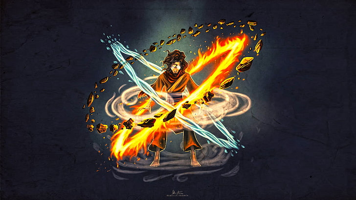

Aura Research Institute
The premier database for tracking, analyzing, and farming anime aura.
Enter the Vault
We monitor five primary subjects known for their infinite presence.
Explore All Subjects